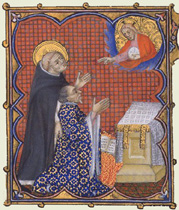
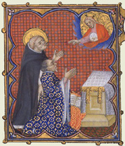

|  |
|---|
Fragmentum editum a M. H. Laurent Sancti Maximini 1937
recognovit Enrique Alarcón et instruxit

|  |
|---|

[91973] Inventarium Traiecti, tit. 2 Assignate sunt vicesimo mensis septembris prime indictionis apud Traiectum fratri Thomasio de Aquino ordinis Predicatorum, exequtori testamentario quondam domini Rogerii de Aquila comitis Traiecti, distribuende per eum iuxta dispositionem predicti quondam comitis auctoritate mandati regii eidem Sergio directi.
[91974] Inventarium Traiecti, tit. 3 Que invente fuerunt in castro Traiecti res mobiles infrascripte videlicet:
[91975] Inventarium Traiecti, n. 1 Equus unus pili bagi, mercatus merco
[91976] Inventarium Traiecti, n. 2 Item alius equus eiusdem pili bagi mercatus merco
[91977] Inventarium Traiecti, n. 3 Item palafredus unus pili sauri liardi balsanus omnibus pedibus cum balzanatura una in fronte.
[91978] Inventarium Traiecti, nota 1 Provideatur testamenti pervendendos militibus per manus fratris Thomasii de Aquino.
[91979] Inventarium Traiecti, n. 4 Item palafredus unus pili sauri liardi balsanus omnibus pedibus cum balzanatura una in fronte.
[91980] Inventarium Traiecti, n. 5 Item mula una pili bay focata omnibus pedibus.
[91981] Inventarium Traiecti, n. 6 Item mulus unus eiusdem pili focatus similiter omnibus pedibus.
[91982] Inventarium Traiecti, n. 7 Item barde due, que sunt eiusdem mule et muli.
[91983] Inventarium Traiecti, n. 8 Item frena quattuor cum retinis et capiczallis suis que sunt equorum ipsorum.
[91984] Inventarium Traiecti, n. 9 Item sella una magna de zamito rubeo cum barris, laboratis ad setam, et coperta sua de corio.
[91985] Inventarium Traiecti, n. 10 Item sella una magna de zamitto nigro cum barris similiter laboratis ad setam et cum coperta sua.
[91986] Inventarium Traiecti, n. 11 Item sella una ad palafredum cum barris similiter laboratis ad setam.
[91987] Inventarium Traiecti, n. 12 Item iumentum unum pili liardi ferrantis, mercatum a dextro latere merco
[91988] Inventarium Traiecti, n. 13 Item aliud iumentum morellum balsanum omnibus pedibus posterioribus a sinistro merco X et a dextro merco X mercato.
[91989] Inventarium Traiecti, n. 14 Item iumenta duo pili sauri quorum unum mercatum est in dextro latere merco X et aliud in sinistro latere eodem merco mercatum est.
[91990] Inventarium Traiecti, n. 15 Item, iumentum unum pili morelli cum balsanatura una in fronte et balsanatura in pede posteriore et anteriore sinistro mercato et dextro latere merco
[91991] Inventarium Traiecti, n. 16 Item iumenta duo morella mercata in sinistro latere posteriore merco, unum ipsorum in destro latere posteriore merco A
[91992] Inventarium Traiecti, nota 2 Asserit apodixa eiusdem fratris Thomasii.
[91993] Inventarium Traiecti, n. 17 Item aliud iumentum morellum mercatum in sinistro latere posteriore merco .
[91994] Inventarium Traiecti, n. 18 Item iumenta morella duo mercata in sinistro latere posteriore merco X, quorum unum est cum stella in fronte.
[91995] Inventarium Traiecti, n. 19 Item pulla una unius anni cum balzanatura una in pede posteriore sinistro et pulla una morella presenti anno nata cum balzanatura una in fronte et alia in pede posteriore sinistro.
[91996] Inventarium Traiecti, n. 20 Item tunica una et tabarrum unum de bleveto claro de Sayno cum pomettis de eodem panno.
[91997] Inventarium Traiecti, n. 21 Item tunica una de bruno de Cambrasa, et guarnacia eiusdem panni infoderata pellibus variis.
[91998] Inventarium Traiecti, n. 22 Item tunica una partuta de viridi et scarlato et guarnacia eiusdem maneriei, infoderata pellibus variis.
[91999] Inventarium Traiecti, n. 23 Item tunica una de virgata de Provinza cum campo de bleveto, virga una rubea, et duabus nigris.
[92000] Inventarium Traiecti, n. 24 Item guarnacia una eiusdem panni virgati, infoderata zendato celesti.
[92001] Inventarium Traiecti, n. 25 Tunica una de Tarentana viridi.
[92002] Inventarium Traiecti, n. 26 Guarnacia una de eodem panno infoderata zendato rubeo.
[92003] Inventarium Traiecti, n. 27 Item corrigia una de argento ponderis unciarum tredecim, cum cincto de seta nigra.
[92004] Inventarium Traiecti, n. 28 Item nappi de argento octo ponderis librarum quattuor.
[92005] Inventarium Traiecti, n. 29 Item de frumento solcare viginti septem, que sunt ad tumulum generalem tumuli CVIII.
[92006] Inventarium Traiecti, nota 3 Continetur in eadem apodixa.